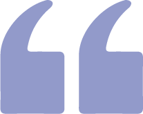

Hi, Tamanna. Thank you for sharing your career story with Real World Data Science. Please tell us a little about yourself and your role in data science.
I’m Tamanna Haque. I’ve been working at Jaguar Land Rover for nearly four years, recently promoted to lead data scientist working within product engineering. It’s coming up to eight years that I’ve been working in the field, and my areas of interest are the use of machine learning to provide the best products and experiences for my customers and stakeholders.
What does your job involve?
My role involves using the connected car and AI to make our products and customer experiences better, whilst leading within our wide data science team too. The data science team in Manchester, UK, originated with myself and one of my teammates – it’s since grown to nearly 40 (cross-sites and countries) and developed into a high-performing, advanced data science team.
What makes us stand out is the nature of our work – we mostly use vehicle data (of participating customers), which is different to a lot of other commercial businesses or teams who’ll focus more on transactional or web data. The data we use lends itself to some pretty interesting projects, and a general futuristic feel here.
I’m particularly interested and active in enabling a more electric and modern luxury future from the use of vehicle data.
What does “data science” mean to you?
The realisation of value! Whether that is added revenue, saved costs or improved growth, I’m led by what data science can do for the business and its customers. The use of data science can open up many exciting, value-adding opportunities.


There are more routes to getting into data science nowadays, but it’s important to not lose sight of fundamentals such as statistics and mathematics. A lot of people can code-up models but it’s fair to say that only a portion of them appreciate how to do this responsibly.
What do you think is your most important skill as a data scientist?
I’ve always presented myself as a technically astute data scientist, even when entering leadership. But my niche is my ever-growing commercial awareness and passion about our products, customers and business. These aren’t new qualities, but they now align with my professional interests, as well as personal (I’ve been a fan of the Jaguar brand since childhood)!
How did you get into data science?
I did a maths degree at the University of Manchester, where I specialised in statistics. I didn’t do any post-graduate education and this was fine for me.
After graduating, I joined a digital fashion retailer (with a financial services proposition) as an analyst initially. I learned a lot about real-life data and analytics itself, whilst developing a rounded understanding about the business and how to deal with stakeholders cross-functionally. I must have served a few hundred at least(!) and left most of the ‘fancy’ stuff I learned at university aside, whilst getting to grips with so many aspects of commercial analytics. A great way for me to set solid foundations for what followed, and I personally feel this gives me a lens that others who dive straight into data science don’t have.
I was soon attracted to data science because it tapped into what I learned at university and challenges you to keep learning; there’ll always be things to learn, and new advances in the field.
What, or who, first inspired you to become a data scientist?
I have a twin sister, we’ve always been together throughout education. Even before we graduated together, she secured her first role as an analyst. This opened my eyes to data, and data science followed for us both!
What were the hurdles or challenges that you needed to overcome on your route into the profession?
I had a few people tell me I couldn’t do data science, possibly because I didn’t fit the typical data scientist stereotype in several ways. I think attitudes in the field have changed over time though and on a personal level, it’s motivated me to give it everything, and I can’t regret that.
And what are the challenges that you face now, as a working data scientist?
I need to manage my diary well to ensure effectiveness and work-life balance. I’m overseeing people, other projects, doing public speaking and trying to remain hands on. I sometimes block out chunks of time in my diary – I need some meeting-free time to produce quality technical work. I try to finish on time and enjoy a very busy social life with my family and friends. A flexible attitude to how we work helps to keep me happy and energised whilst I’m delivering from various angles.
Thinking back to your earlier roles in data science, how do they compare to your current role?
My current role is very different to my previous roles. I’m continually learning and adapting how I can be a good leader, providing support to a breadth of colleagues (in and outside the team) whilst delivering myself. I’m actively involved in setting and refining our team’s strategy and I’m enjoying leading projects which either deliver high financial impact or help set the path in terms of new tech and/or machine learning capability. There is much more responsibility but it’s easy to stay energised when working on cars and for a business I’ve long admired.
What was the most important thing you learned in your first year on the job?
I should have had more confidence in myself, but this grew – as I adjusted to the new environment I became much more assertive. My domain knowledge and data science expertise combined help to build my self-confidence, credibility and reputation.
What have been your career highlights so far?
I’m most proud of my recent promotion from senior to lead data scientist. Also it was exciting for my family and I when I gained an offer to join Jaguar Land Rover.
Have there been any mistakes or regrets along the way?
No, what’s meant to be will be!
How do you think your role will evolve over the rest of your career?
My progression has been relatively rapid, and I hope I’ve got many, many years ahead of me in my career. It’s hard to say how my role will evolve, I have a blend of responsibilities in my role which combined provide great fulfilment for me at the moment.
If you were starting out in data science now, what would you put at the top of your reading/study list?
A good understanding of analytics and the domain you’re in are my recommended prerequisites to doing data science.
Analytics is an important part of the data science lifecycle, being able to get the data yourself and communicate results with influence, for example, are just a few aspects of analytics which underpin successful data science projects.
Also, without awareness of the business and industry you’re working in, you can become very dependent on others. Data science itself can be quite challenging, so it’s great to have a solid foundation before starting out.
What personal or professional advice would you give for anyone wanting to be a data scientist now?
With the level of continuous learning required to just simply keep up, it can be more of a lifestyle and not a job, so this is something to consider!
What do you think will be the main challenges facing data science as a field in the next few years?
I still expect to see a skills gap in the field. There are more routes to getting into data science nowadays, but it’s important to not lose sight of fundamentals such as statistics and mathematics. A lot of people can code-up models but it’s fair to say that only a portion of them appreciate how to do this responsibly, understanding samples versus populations, statistical testing, which type of regularisation to use in a neural network, et cetera.
I also think there’s a challenge of questionable data science products reaching high levels of popularity and usage amongst the public… Some recent developments in this space have been extremely intelligent but raise ethical concerns. Just because something can be done with AI doesn’t mean it should, and my preferences are towards AI being ethical and (ideally) explainable.
- Copyright and licence
- © 2023 Royal Statistical Society

 This work is licensed under a Creative Commons Attribution 4.0 (CC BY 4.0) International licence, except where otherwise noted.
This work is licensed under a Creative Commons Attribution 4.0 (CC BY 4.0) International licence, except where otherwise noted.
- How to cite
- Tarran, Brian. 2023. “‘Data science challenges you to keep learning – there’ll always be new advances in the field.’” Real World Data Science, March 28, 2023. URL